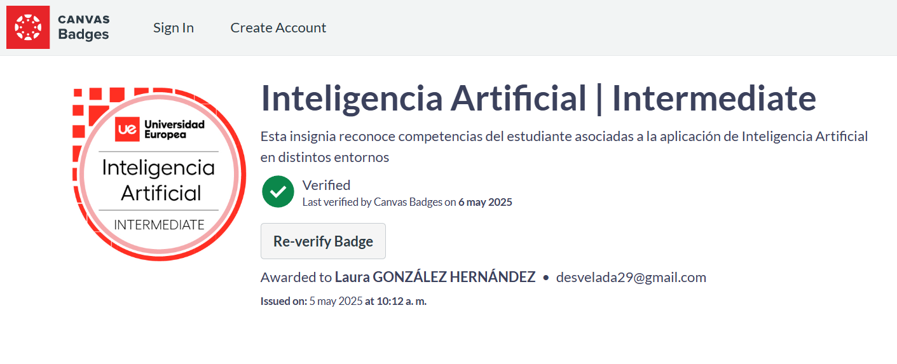

2008 — ACTUALIDAD
ANOVO España
Gestión administrativa, diagnóstico funcional de terminales móviles y apoyo informático interno a compañeros.
Soy Laura González Hernández, Técnica Superior en Administración de Sistemas Informáticos en Red. Me interesa comprender cómo funcionan los sistemas, resolver incidencias y construir entornos seguros.
Mi trayectoria combina gestión de procesos y diagnóstico de dispositivos electrónicos en ANOVO España con formación especializada en sistemas y redes. En el trabajo también presto apoyo informático a compañeros, investigando incidencias de aplicaciones, impresoras y recursos compartidos. Continúo desarrollando mis conocimientos mediante proyectos prácticos de infraestructura y seguridad.
Windows Server 2022, Ubuntu Server, Active Directory, GPO, DNS y DHCP.
TCP/IP, segmentación LAN/servicios, pfSense, reglas de firewall y NAT.
LDAPS, TLS, UFW, Fail2Ban, auditoría, control de accesos y hardening.
SFTPGo, Apache2, HTTPS, proxy inverso y servicios web.
Scripts Bash, rsync, tareas programadas y copias de seguridad.
Virtualización, Docker y resolución de incidencias en entornos de prueba.
Diseño e implementación de una infraestructura corporativa simulada, con red segmentada, directorio centralizado, autenticación segura y servicios de transferencia de archivos. Incluye políticas de seguridad, auditoría y copias automatizadas.
El portfolio íntegro contiene capturas técnicas de un laboratorio académico, incluidas direcciones IP privadas y detalles de configuración. Revísalo antes de publicar esta web en Internet.
Captura real del portal desarrollado sobre Apache2. Se ha recortado la interfaz del navegador para no mostrar la dirección interna del laboratorio.
Consulta aquí el documento original de mi proyecto fin de grado ASIR, o ábrelo en otra pestaña con los botones anteriores.
Gestión administrativa, diagnóstico funcional de terminales móviles y apoyo informático interno a compañeros.
Soporte técnico: incidencias de hardware y software, instalación de sistemas operativos y configuración de redes.
Administración de Sistemas Informáticos en Red · Universidad Europea de Madrid.
Sistemas Microinformáticos y Redes · IFP.

Insignia de Inteligencia Artificial · Nivel intermedio · Universidad Europea (2025).
Comparto aquí mi formación, experiencia y proyectos técnicos.